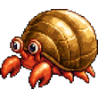

 FireBug
FireBugTap a stage to read its story.
Shellnip is an endearing little hermit crab hauling a smooth rounded shell on its back, two orange-tipped front claws raised in permanent readiness, and bright round eyes mounted on short stalks. It skitters across the Lava Crater's warm basalt shelves collecting hot pebbles to swap into its shell for heat. When it finds a smoldering memory-stone it grabs it in both claws, holds it up to examine, then tucks it directly into its shell like a tiny archivist. Nothing it picks up is ever truly dropped.
Field note: Shellnip has never voluntarily set down any object it has picked up - its shell contains 47 stones of various temperatures.
Lava Crater. Shellnip and its family are found in the Lava Crater. See everyone who lives there.
Share a Bond Food that matches its types to become friends. Shellnip loves:
A Bond Food is not a trick. It joins your spirit with the Kimuro's spirit, and only when it chooses you.
Print the Kimuro adventure packs: mazes, cards, a board game and Bond Mark medals.
See the printable packs